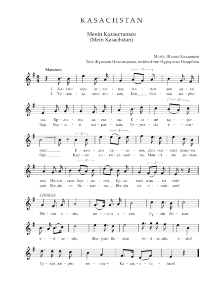

The State Anthem of the Republic of Kazakhstan (Kazakh: Қазақстан Республикасының Мемлекеттік Гимні, Qazaqstan Respublikasinıñ Memlekettık Gimnı) is the national anthem of Kazakhstan, adopted on 7 January 2006. It is based on the song named Meniñ Qazaqstanım (Cyrillic: Менің Қазақстаным, pronounced [mʲeˈnɘɴ qʰɑzɑqstɑˈnəm]; lit. 'My Kazakhstan') written in 1956 composed by Shamshi Kaldayakov and written by Jumeken Najimedenov. This replaced the former anthem used after independence, which followed the melody of the anthem of the Kazakh SSR. The original lyrics were modified by president Nursultan Nazarbayev before the decree was issued.